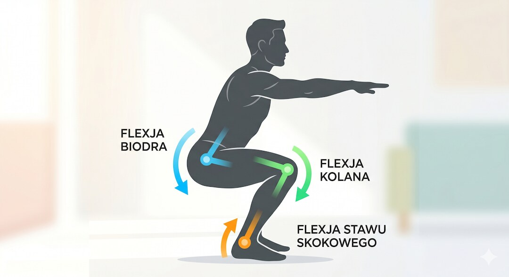
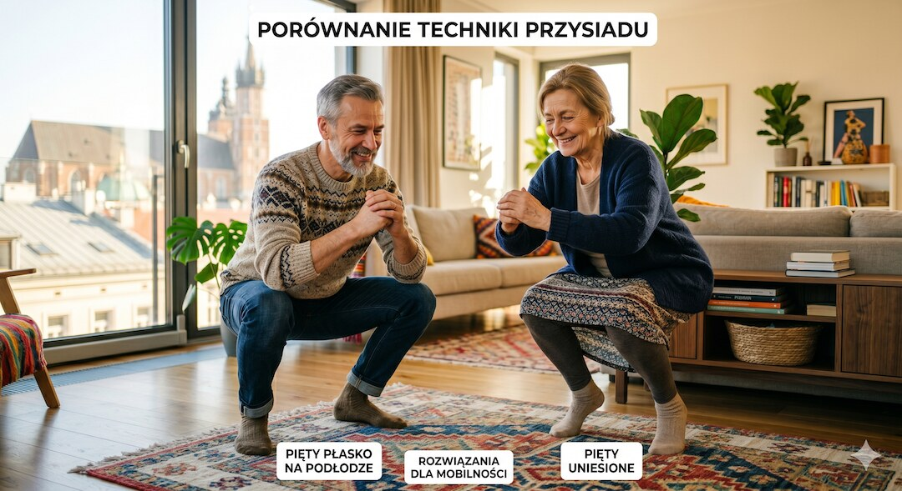
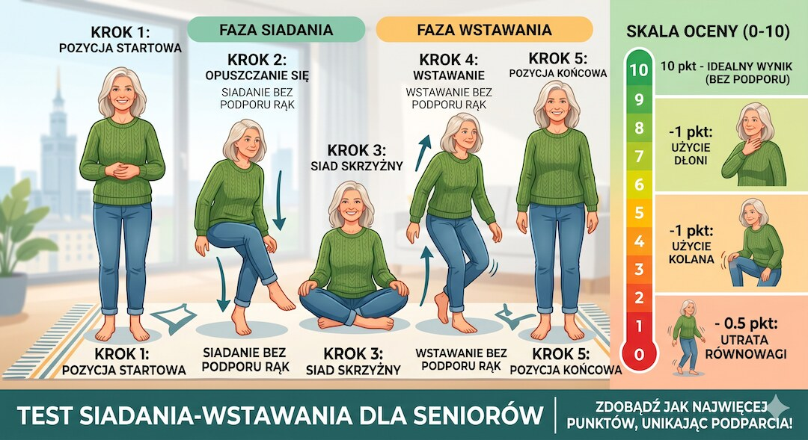
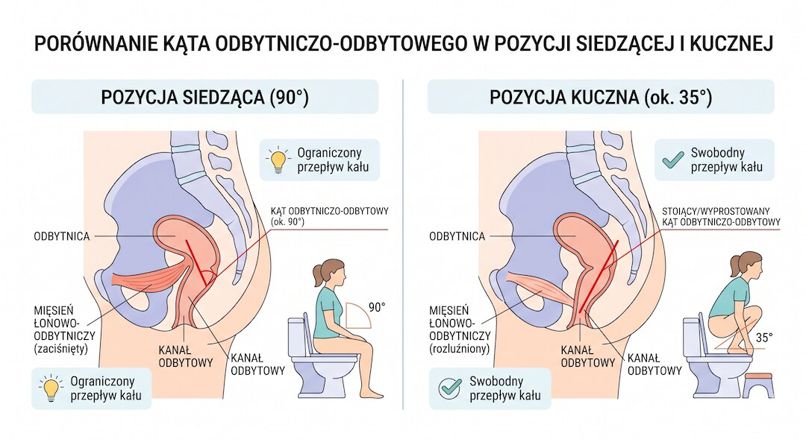
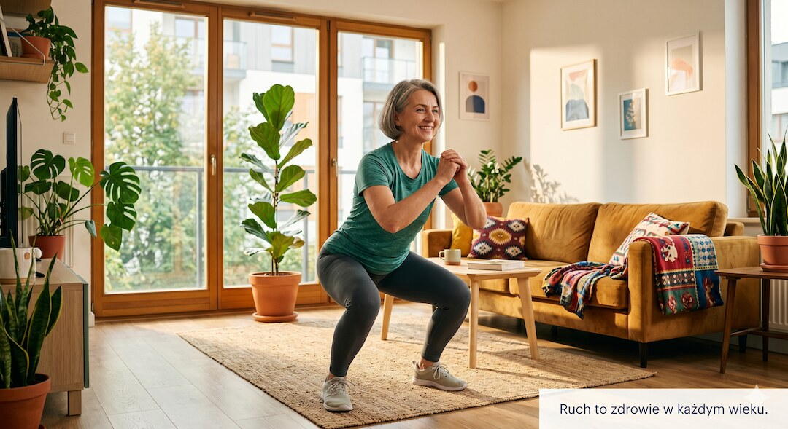
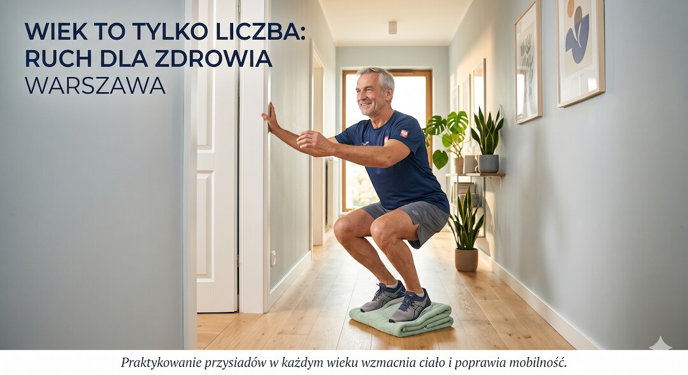
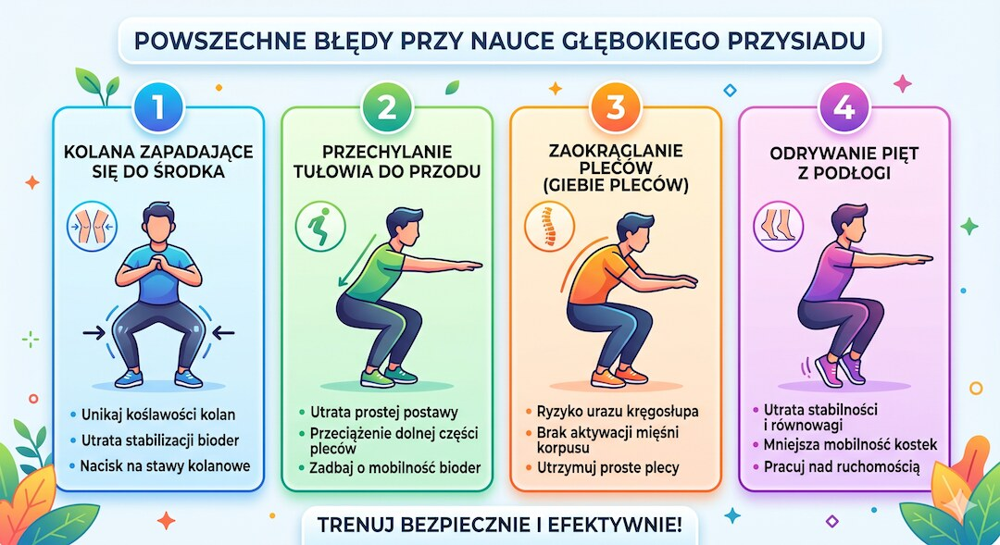

Pół świata siedzi w głębokim przysiadzie jak w fotelu, a ty padasz po pięciu sekundach. Spokojnie: to nie musi oznaczać ani wieku, ani słabych nóg. Najczęściej to sygnał z kostek, bioder i równowagi. Zobacz, co Asian squat mówi o mobilności po 50-tce i jak odzyskiwać go bez wciskania stawów na siłę.
Szybka odpowiedź
Głęboki przysiad po 50-tce jest testem mobilności kostek, bioder i kontroli tułowia; jeśli pięty odrywają się od podłogi, zacznij od podparcia, klina pod pięty i krótkich zejść bez bólu, a przy bólu kolana, świeżej kontuzji, endoprotezie lub utracie równowagi cofnij zakres i skonsultuj ćwiczenie z fizjoterapeutą.
Kluczowe wnioski
- Głęboki przysiad (Asian squat) to pozycja wymagająca jednoczesnej pracy bioder, kolan, kostek i równowagi, a nie osobny test siły nóg.
- Najczęstsza blokada to ograniczona dorsifleksja kostki i sztywność bioder po latach siedzenia. U części osób budowa stawu biodrowego realnie ogranicza głębokość.
- Test siadania i wstawania z podłogi pokazuje ogólną sprawność. W badaniach niższe wyniki wiązały się z wyższą śmiertelnością, ale nie dowodzą, że samo kucanie wydłuża życie.
- Najbezpieczniejsza droga po 50-tce to krótka codzienna praktyka: podparcie rękami, ewentualny klin pod pięty i stopniowe wydłużanie czasu bez bólu.
Czym właściwie jest głęboki przysiad zwany Asian squat?
Pewnie widziałeś to na wakacjach w Azji: gość w twoim wieku siedzi na pełnym przysiadzie, pięty płasko na ziemi, je zupę i gada przez telefon jak w fotelu. To właśnie głęboki przysiad, na Zachodzie zwany Asian squat. Żaden akrobatyczny wyczyn — po prostu najstarsza pozycja odpoczynku człowieka.
Technicznie chodzi o pełne zgięcie w biodrach, kolanach i kostkach. Pośladki schodzą nisko, blisko pięt, a stopy zostają płasko na podłodze. Długo przed wynalezieniem krzeseł ludzie tak właśnie odpoczywali, gotowali, jedli i pracowali. W wielu krajach Azji i Afryki robi się tak do dziś — od dziecka po starość.
U nas krzesło i sedes wygryzły tę pozycję z codzienności jakieś sto lat temu. Efekt? Głęboki przysiad zrobił się egzotyczny, choć to dokładnie ten sam ruch, który każdy z nas robił bez problemu jako dwulatek.

Dlaczego jedni siedzą w nim godzinami, a ty padasz po 5 sekundach?
Znam to z autopsji, bo sam nie jestem z innej planety: schodzisz w dół, pięty odrywają się od podłogi, lecisz do tyłu i łapiesz za cokolwiek. Najczęściej to nie wina słabych nóg. To zablokowana kostka i biodra, które przez dekady siedzenia na krześle zapomniały, jak się zgina.
Główny hamulec to ruchomość kostki, czyli dorsifleksja — zdolność przesunięcia kolana w przód nad palcami, gdy pięta wciąż trzyma się ziemi. Brakuje jej i ciało zaczyna kombinować: odrywa pięty, zwala ciężar do tyłu albo przerzuca go na kolana i dolny odcinek pleców. Badania nad ruchem przysiadu pokazują dokładnie ten mechanizm.
Druga sprawa to biodra. Część fizjoterapeutów zwraca uwagę, że kształt i ustawienie panewki potrafią u niektórych ograniczać głębokość niezależnie od treningu — i coś w tym jest. Inni eksperci dodają, że u większości ludzi to przede wszystkim kwestia mięśni i nawyku, bo te same osoby po kilku tygodniach pracy schodzą coraz niżej. Krótko: u jednych to anatomia, u większości zwykłe „używaj albo strać”.

Co głęboki przysiad mówi o twoim zdrowiu po 50-tce?
Tu robi się ciekawie. Zwykłe siadanie na podłogę i wstawanie z niej jest domowym testem siły, równowagi, mobilności i koordynacji. Nie mówi, ile lat zostało w metryce, ale dobrze pokazuje, czy ciało po 50-tce potrafi bezpiecznie zejść nisko i wrócić do stania.
Chodzi o test wstawania z podłogi (sitting-rising test), oceniany w skali od 0 do 10. Punkty traci się za każde podparcie ręką, kolanem czy o cokolwiek. W klasycznym badaniu na osobach w wieku 51–80 lat każdy dodatkowy punkt wiązał się z około 21% lepszą przeżywalnością, a najsłabsi mieli kilkukrotnie wyższe ryzyko zgonu niż ci z najwyższym wynikiem.
Nowsza praca z 2025 roku, na ponad czterech tysiącach dorosłych w wieku 46-75 lat, poszła dalej. Każdy utracony punkt w teście wiązał się z wyższym ryzykiem zgonu z przyczyn naturalnych i sercowo-naczyniowych w około 12-letniej obserwacji. To nadal związek statystyczny, nie obietnica, że sam przysiad „przedłuża życie”.
Uczciwie: to badania obserwacyjne, więc pokazują powiązanie, a nie proste „kucasz, więc żyjesz dłużej”. Słaby wynik jest raczej lustrem — odbija siłę, równowagę, elastyczność i ogólny stan. Dlatego jest tak użyteczny: w dwie minuty, bez sprzętu, dostajesz sygnał, na czym stoisz.
- Zejdź na podłogę i wstań, starając się nie podpierać rękami ani kolanami.
- Startujesz z 10 punktów: odejmij 1 za każde podparcie i 0,5 za wyraźne zachwianie.
- Wynik 8 i wyżej to dobry znak; niski wynik to nie wyrok, tylko punkt startu do pracy.

Czy to prawda, że kucanie jest zdrowsze dla jelit?
Pewnie słyszałeś, że pół świata kuca w toalecie i podobno dlatego ma mniej kłopotów z jelitami. Coś w tym jest, ale bez przesady. W przysiadzie kąt między odbytnicą a kanałem odbytu się prostuje. W teorii wypróżnienie idzie więc łatwiej i z mniejszym parciem niż na klasycznej desce.
W znanym badaniu porównującym pozycje wypróżniania ludzie w kucki potrzebowali średnio około 51 sekund, a na wysokiej desce około 130 sekund — i sami oceniali kucanie jako mniej wysiłkowe. Przegląd badań z 2025 roku potwierdza ten sam kierunek: w przysiadzie kanał odbytniczy jest prostszy, a parcie mniejsze.
Nie rób z tego rewolucji. Próby były małe, a większości ludzi zwykły sedes w niczym nie przeszkadza. Jeśli chcesz prosty patent bez kucania nad muszlą, postaw stopy na niskim podnóżku, tak żeby kolana były wyżej niż biodra. Łapiesz część efektu pozycji kucznej, a jeśli masz bolesne kolana, zostajesz w bezpieczniejszym zakresie.

Czy głęboki przysiad jest bezpieczny dla kolan?
„Przysiad rozwala kolana” — ten mit chodzi za nami od lat i trzyma niejednego z dala od podłogi. A prawda jest taka: dla zdrowego kolana sam głęboki przysiad bez obciążenia nie jest z automatu groźny. Kontrolowany ruch w pełnym zakresie to dla stawu coś naturalnego. Schody zaczynają się przy bólu, kontuzji albo dokładaniu ciężaru na siłę.
Co innego, gdy do przysiadu wrzucasz sztangę albo na siłę zbijasz głębokość mimo zablokowanej kostki. Wtedy obciążenie faktycznie ucieka tam, gdzie nie powinno — na kolana i dolny odcinek pleców. Dlatego sztywna kostka jest tu większym wrogiem niż sam zakres ruchu w kolanie.
Zasada na zdrowy rozsądek. Masz świeżą kontuzję, wszczepioną endoprotezę, ostry ból albo niestabilne kolano? Odpuść głęboki zakres i pogadaj z fizjoterapeutą. Kolana zdrowe, a przysiad nie boli? Schodzenie w dół samą masą ciała jest dla nich raczej treningiem niż zagrożeniem.

Jak krok po kroku odzyskać głęboki przysiad?
Dobra wiadomość: głęboki przysiad to nie talent, tylko umiejętność . Da się ją odzyskać prawie w każdym wieku. Nie trzeba siłowni ani sprzętu — wystarczy kawałek podłogi i trochę cierpliwości. Klucz to kostka i biodra, więc zaczynamy od tego, żeby w ogóle zejść w dół z piętami na ziemi.
Najprostszy start to przysiad wspomagany. Złap się futryny albo ciężkiego stołu, zejdź tak nisko, jak dasz radę bez bólu, i po prostu w tym wisisz. To nie zawody, to rozmowa z własnymi stawami. Z czasem coraz mniej obciążasz ręce, aż w końcu trzymasz się tylko dla równowagi.
Pięty uparcie odrywają się od ziemi? Podłóż pod nie cienki podkład — złożony ręcznik albo niski klin. Zejdziesz głębiej mimo sztywnej kostki, a podkład będziesz stopniowo obniżał, w miarę jak ruchomość rośnie. To uczciwy skrót, a nie oszukiwanie.
- Tydzień 1–2: przysiad wspomagany przy futrynie, 3 razy dziennie po 20–30 sekund.
- Tydzień 3–4: zmniejszaj podparcie rąk; jeśli trzeba, klin pod pięty.
- Tydzień 5+: dokładaj sekundy i obniżaj klin; celuj w 1–2 minuty swobodnego siedzenia w przysiadzie.
- Codzienność: wpleć przysiad w zwykłe czynności — sznurowanie butów, sięganie do dolnej szafki, podlewanie roślin.

Jakich błędów unikać przy nauce głębokiego przysiadu?
Na koniec lista wpadek, które widzę najczęściej u tych, co dopiero ruszają. Najgorsza to chcieć wszystko od razu i wciskać się do ziemi mimo bólu w kolanie czy kostce. Druga to ćwiczyć zrywami raz w tygodniu, zamiast po trochu, ale codziennie. To mobilność, nie sztanga.
Trzeci klasyk to ignorowanie kostki. Ludzie męczą biodra i plecy, a prawdziwa blokada siedzi niżej. Jeśli pięty lecą w górę, najpierw popracuj nad ruchomością kostki i użyj klina, zamiast walczyć z zakresem, którego kostka jeszcze nie daje. Czwarty błąd to porównywanie się do gościa z Bangkoku, który kuca od pięćdziesięciu lat — twój punkt startu jest twój.
I rzecz najważniejsza: ból to nie „przełamywanie się”, tylko czerwone światło. Dyskomfort z rozciągania jest okej, ostre kłucie w stawie nie. Coś boli? Cofnij zakres, podłóż wyżej pięty albo odpuść na dziś. Mobilność lubi konsekwencję, nie bohaterstwo.
- Nie dociskaj się do podłogi przez ból stawu — to sygnał stop, nie wyzwanie.
- Nie trenuj zrywami; krótko, ale codziennie działa lepiej.
- Nie zapominaj o kostce — to ona najczęściej blokuje głębokość.
- Nie porównuj się z innymi — liczy się twój własny progres.

Zobacz też: ai w medycynie czy naprawde pomaga pacjentom fakty badania.
Najczęściej zadawane pytania
Czy każdy może nauczyć się głębokiego przysiadu?
Nie każdy odzyska identyczną głębokość, bo ograniczać mogą kostki, biodra, wcześniejsze urazy albo budowa stawu biodrowego. Większość osób może jednak poprawić zakres bez wciskania stawów: zacznij od wersji z podparciem, klinem pod pięty i ruchem tylko do granicy bez bólu.
Dlaczego dzieci kucają z łatwością, a dorośli nie?
Dzieci często używają pełnego zakresu bioder, kolan i kostek w zabawie oraz siadaniu na podłodze. Dorośli przez lata siedzą na krześle, więc kostka traci dorsifleksję, biodra sztywnieją, a równowaga w dole przysiadu robi się mniej pewna.
Czy kucanie pomaga przy zaparciach i problemach z wypróżnianiem?
Pozycja kuczna może zmniejszyć kąt odbytniczo-odbytowy i u części osób ułatwić wypróżnienie. W praktyce często wystarcza niski podnóżek pod stopy przy sedesie. Przy krwi, bólu, nagłej zmianie rytmu wypróżnień albo utracie masy ciała potrzebna jest konsultacja lekarska.
Co oznacza, że nie potrafię wstać z podłogi bez pomocy rąk?
To sygnał, że warto popracować nad siłą nóg, równowagą, mobilnością bioder i kontrolą tułowia. Test sitting-rising w badaniach wiązał niższe wyniki z większym ryzykiem zdrowotnym, ale wynik nie jest diagnozą ani wyrokiem; traktuj go jako punkt startu.
Źródła
- PubMed: Sitting-rising test scores predict natural and cardiovascular causes of deaths (2025)
- Araújo C. i wsp., Sitting-rising test a przyczyny zgonów — European Journal of Preventive Cardiology (2025)
- de Brito L. i wsp., Zdolność siadania i wstawania z podłogi a śmiertelność ogólna (pełny tekst, 2012/2014)
- PubMed: Effect of limiting ankle-dorsiflexion range of motion on squat kinematics (2012)
- PubMed Central: deep squat movement, zakres stawów i siła mięśni (2020)
- PubMed Central: altered knee and ankle kinematics with limited ankle dorsiflexion (2014)
- PubMed: Restricted unilateral ankle dorsiflexion and squat asymmetry (2020)
- Ruchomość kostki w głębokim przysiadzie a jakość życia — Frontiers in Rehabilitation Sciences (2025)
- PubMed: dorsifleksja kostki w przysiadzie a jakość życia po operacji złamania kostki (2025)
- Siedzenie vs kucanie: przegląd pozycji w toalecie i skutków zdrowotnych — PMC (2025)
Uwaga: Artykuł ma charakter informacyjny i edukacyjny. Nie zastępuje konsultacji lekarskiej, diagnozy ani leczenia.